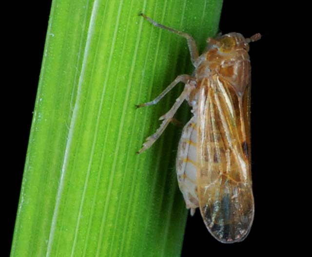
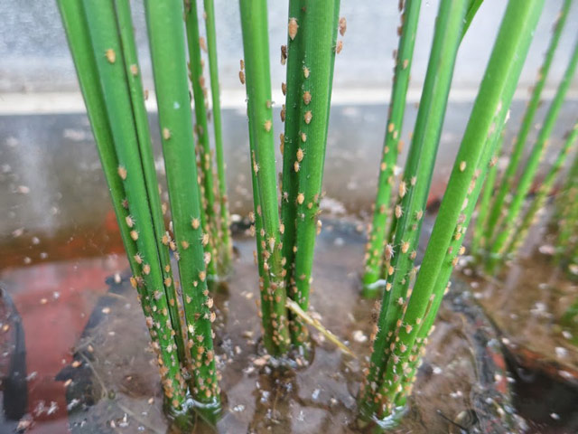
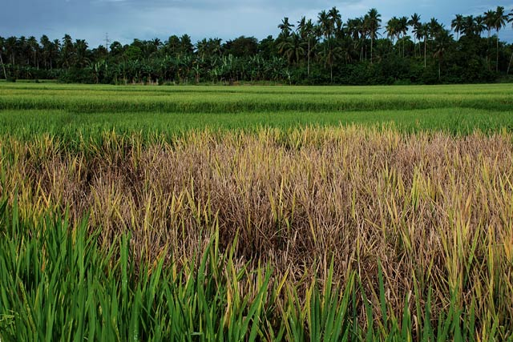

Planthopper 
Two species of planthopper infest rice. These are the brown planthopper (BPH), Nilaparvata lugens (Stal); and the whitebacked planthopper (WBPH), Sogatella furcifera (Horvath).
What it does
High population of planthoppers cause leaves to initially turn orange-yellow before becoming brown and dry and this is a condition called hopperburn that kills the plant.
BPH can also transmit Rice Ragged Stunt and Rice Grassy Stunt diseases. Neither disease can be cured.
Why and where it occurs
Planthoppers can be a problem in rainfed and in irrigated wetland environments. It also occurs in areas with continuous submerged conditions in the field, high shade, and humidity.
Closed canopy of the rice plants, densely seeded crops, excessive use of nitrogen, and early season insecticide spraying also favors insect development.
How to identify
Check for the presence of insect:
- crescent-shaped white eggs inserted into the midrib or leaf sheath
- white to brown nymphs
- brown or white adults feeding near the base of tillers
Check the field for:
- hopperburn or yellowing, browning and drying of plant
- ovipositional marks exposing the plant to fungal and bacterial infections
- presence of honeydew and sooty molds in the bases of areas infected
- plants with ragged stunt or grassy stunt virus disease
Hopperburn is similar to the feeding damage or "bugburn" caused by the rice black bug. To confirm hopperburn caused by planthoppers, check for the presence of sooty molds at the base of the plant.
Why is it important
 Hopperburn
The feeding damage caused by planthoppers results in the yellowing of the plants. At high population density, hopperburn or complete drying of the plants is observed. At this level, crop loss may be 100%.
In field conditions, plants nearing maturity can have hopperburns if infested with about 400−500 BPH nymphs. In the 1970s and 1980s, BPH was considered a threat to rice production in Asia. BPH also transmit Rice Ragged Stunt and Rice Grassy Stunt viruses..
At a population density of 400−500 nymphs or 200 adults per plant, WBPH can cause complete loss of rice plants. Outbreaks of WBPH were reported in Pakistan in 1978, Malaysia in 1979, and India in 1982, 1984, and 1985.
How to manage
Outbreaks result from pesticides destroying natural enemies (BPH eggs hatch unchecked, and surviving BPH quickly build-up populations to damaging levels), or when longwinged planthoppers are being carried in by the wind.
To prevent outbreaks of planthopper:
- Remove weeds from the field and surrounding areas.
- Avoid indiscriminate use of insecticide, which destroys natural enemies.
- Use a resistant variety. Contact your local agriculture office for an up-to-date list of available varities.
- Critical numbers: At a density of 1 BPH/stem or less there is still time to act in case the numbers increase.
- Look for BPH daily in the seedbed, or weekly in the field, on stems and the water surface. Check each side of the seed bed (or direct-seeded fields). For older rice plants, grasp the plant, bend it over slightly, and gently tap it near the base to see if planthoppers fall onto the water surface. For transplanted rice look at bases of 10 to 20 hills as you cross the field diagonally. There is no need to scout for BPH or WBPH beyond the milk stage.
- Use light traps (e.g., an electric bulb or kerosene lamp near a light colored wall or over a pan of water) at night when rice is prone to planthopper attack. Do not place lights near seedbeds or fields. If the light trap is inundated with hundreds of BPH, it's a signal to check your seedbed or field immediately; then scout every day for the next few weeks. If farmers monitor on a daily basis anyway, then a light trap is unnecessary.
To control planthoppers:
Mechanical & physical measures
- Flood the seedbed, for a day, so that only the tips of seedlings are exposed will control BPH.
- Sweep small seedbeds with a net to remove some BPH (but not eggs), particularly from dry seed beds. At high BPH densities, sweeping will not remove sufficient numbers of BPH from the base of the plant.
Biological control
- If natural enemies out-number BPH the risk of hopperburn is low. Even rice already damaged by hopperburn should not be treated with insecticides if natural enemies out-number BPH. Natural enemies of BPH include water striders, mirid bugs, spiders, and various egg parasitoids.
Chemical control
Only apply insecticides to the seedbed, for BPH or WBPH, if all of these conditions are met:
- an average of more than one planthopper per stem,
- on average, more planthoppers than natural enemies,
- flooding the seedbed is not an option.
-
Content expert: Jo Catindig (email: j.catindig@irri.org) and Bryce Blackman (email: b.blackman@irri.orgp).
Disclaimer: All information are taken from http://www.knowledgebank.irri.org/